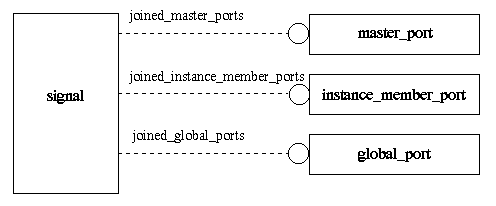
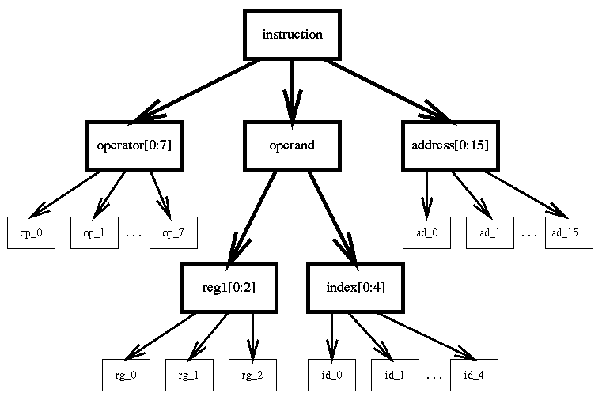
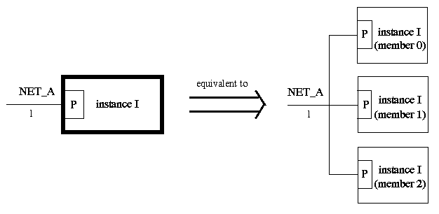
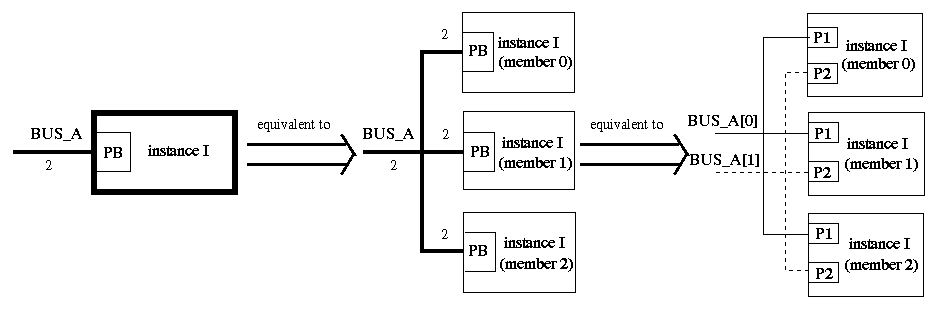
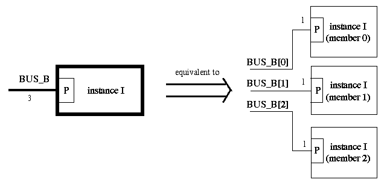
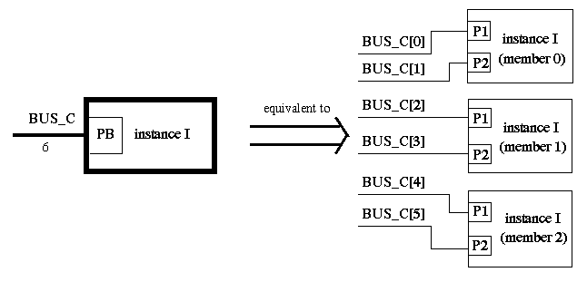
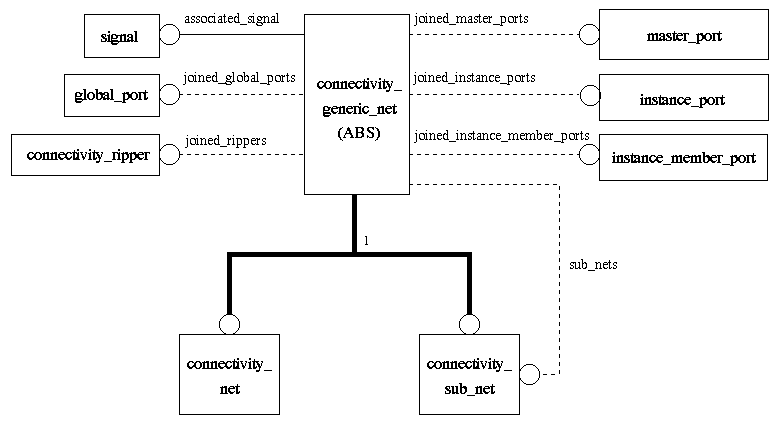

This chapter describes the concept of connectivity in EDIF. In EDIF Version 3 0 0, the concepts of logical connectivity and structural connectivity are explicitly introduced.
In EDIF Version 2 0 0, connectivity information[4] is well specified for simple netlists only. Where complex connectivity information is defined - for example, when handling what are often called ``busses'' - it is unclear if the arrayed form of a net should be used or if the net bundle should be used.
Furthermore, although it is true that for simple netlists all the connectivity at a given level of hierarchy is defined in one place, this is not true for more complicated cases. For example, if electrically common information happens to be described on multiple pages in a schematic then EDIF Version 2 0 0 has no way of allowing the EDIF writer to indicate the total connectivity in one place. In addition, where information from a wide bus is ripped into other less wide nets/busses, a cell of type ripper is required. This means that a CAD system accepting a design in EDIF Version 2 0 0 must unravel the inserted ripper cells to deduce the underlying connectivity.
In EDIF Version 3 0 0, the connectivity information is described in two stages as indicated below. The view types that support connectivity definitions are connectivity, schematic, masklayout, pcblayout and symboliclayout.
| connectivity | schematic | symbolic | masklayout | pcblayout | |
|---|---|---|---|---|---|
| net, subnet | yes | yes | yes | yes | yes |
| bus, sub-bus, bus-slice | yes | yes | yes | yes | yes |
| ripper | yes | yes | yes | yes | yes |
| junction | yes | yes | yes | yes | |
| interconnect_terminator | yes | ||||
| offpageconnector | yes | ||||
| onpageconnector | yes |
Instances are defined in the logical connectivity section. The instantiation process indicates that a given cell with an interface defined by the referenced cluster is to be included in the design at this point.
The signals and signal_groups are used to describe the overall connectivity for the entire view. The model for the logical connectivity section can be found in the logical_connectivity_model schema .
A signal is defined as an object which lists all the global_ports (defined in edif), instance_member_ports (ports on members of instances) and master_ports (ports defined in the cluster_interface) which are electrically common at a given level of hierarchy. A signal is always one-bit wide and is defined within a view, i.e. internal_connectivity_view and internal_schematic_view. All global_ports joined by a signal are defined in the containing edif. All instance_member_ports joined by a signal must refer to instances in the containing view. Finally, all master_ports joined by a signal must be defined in the interface of the containing cluster. Figure 4.1 shows the model of signal.

A signal_group provides a grouping mechanism for signals. A signal_group does not establish connectivity. It is defined within a view and is used to support structural connectivity. A signal_group is specified in terms of an ordered list of one or more signals or signal_groups in the same containing view. The structure of a signal_group is independent of port ordering or port structure. No two signal_groups may have the same structure of members. The same signal may be referenced in the ordered signal list of more than one signal_group. The same signal may be referenced more than once in a single signal_group.
Figure 4.2 shows an example of signal_groups and signals. Boxes with thick borders represent signal_groups and those with narrow borders represent signals. The figure shows how signals can be built up into signal_groups, and these in turn included in further signal_groups. This hierarchical structure can then be used to support the structural connectivity expressed by busses.

When an interconnect (net or bus) joins a port or a port_bundle on a wide instance, the pattern of connectivity will be either in the commoned style or in the fanned out style. For the commoned style, the joined instance_ports or instance_port_bundles reference master_ports or master_port_bundles whose port size is the same as that of the interconnect. For the fanned out style, the joined instance_ports or instance_port_bundles are flattened to lists of instance_member_ports. The length of these lists must be equal to the size of the interconnect. The size of an interconnect is the same as the size of its associated signal or signal_group. A net is associated with a signal; its size is therefore always one. A bus is associated with a signal_group, the size of which is equal to the length of the list of signals created by flattening the signal_group.
The following sections give various examples of using an interconnect to join a port or a port_bundle on a wide instance.
Figure 4.3 illustrates an example of a net joining a port on a wide instance using the commoned style. The wide instance I has a width of three. It instantiates a cluster which defines a master_port P in the cluster_interface.

If a net NET_A is defined which joins to port P on instance I, the underlying connectivity of NET_A will be equivalent to joining port P on the 0th member of instance I, port P on the 1st member of instance I and port P on the 2nd member of instance I together.
Figure 4.4 illustrates an example of a bus joining a port_bundle on an instance using the commoned style. The wide instance I has a width of three. It instantiates a cluster in which two master_ports P1, P2 and a master_port_bundle PB are defined. PB groups P1 and P2 together.

When a bus joins to a port_bundle on an instance using the commoned style, the joined instance_port_bundle must reference a master_port_bundle whose port size is the same as that of the bus. The size of a bus is determined by flattening its associated signal_group. If a bus BUS_A is defined which joins to port_bundle PB on instance I, the size of the port_bundle PB must be the same as the size of the bus BUS_A. In this case, the size of PB is 2 and the size of BUS_A is also 2. The connectivity underlying BUS_A will be equivalent to joining the port_bundle PB on the 0th member instance I, the port_bundle PB on the 1st member of instance I and the port_bundle PB on the 2nd member of instance I together. That is, the 0th bit of BUS_A joins port P1 on the 0th member of instance I, port P1 on the 1st member of instance I and port P1 on the 2nd member of instance I together; the 1st bit of BUS_A joins port P2 on the 0th member of instance I, port P2 on the 1st member of instance I and port P2 on the 2nd member of instance I together.
Figure 4.5 illustrates an example of a bus joining a port on an instance using the fanned out style. The wide instance I has a width of three. It instantiates a cluster which defines a master_port P in the cluster_interface.

When a bus joins to a port on an instance using the fanned out style, the size of the port list resulting from expanding the joined instance_port must be the same as that of the bus. The size of the port list is determined by the width of the instance. Suppose a bus BUS_B is defined which joins to port P on instance I. The size of the bus BUS_B is 3 and the underlying connectivity is : the 0th bit joins port P on the 0th member of instance I; the 1st bit joins port P on the 1st member of instance I; the 2nd bit joins port P on the 2nd member of instance I.
Figure 4.6 illustrates an example of a bus joining a port_bundle on an instance using the fanned out style. The wide instance I has a width of three. It instantiates a cluster in which two master_ports P1, P2 and a master_port_bundle PB are defined. PB groups P1 and P2 together.

When a bus joins to a port_bundle on an instance using the fanned out style, the size of port list resulting from expanding the joined instance_port_bundle must be the same size as that of the bus. The size of the port list is the product of the instance width and the referenced master_port_bundle size. Suppose a bus BUS_C is defined which joins to the port_bundle PB on the instance I. PB implicitly represents a list of 6 ports (i.e. instance width master_port_bundle size = 3 2). Note that the elements of the port_bundle PB correspond to consecutive members of the list of ports. The size of bus BUS_C is 6 and the underlying connectivity is : the 0th bit joins port P1 on the 0th member of instance I; the 1st bit joins port P2 on the 0th member of instance I; the 2nd bit joins port P1 on the 1st member of instance I; the 3rd bit joins port P2 on the 1st member of instance I; the 4th bit joins port P1 on the 2nd member of instance I; the 5th bit joins port P2 on the 2nd member of instance I.
The model of the structural connectivity of internal_connectivity_views is found in the connectivity_structure_model schema . Structural connectivity information is described by connectivity_nets, connectivity_busses and connectivity_rippers, which are explained in the following sections. No implementation information is associated with the structural connectivity of an internal_connectivity_view.
A net is defined as a structured representation of a signal. Each net is associated with a signal and it may join single ports.
On occasion it is necessary to divide a net into various parts so that properties may be added to one part but not to any of the others. For example, a net takes an input to several sub-blocks, only one path of which is critical for routing purposes. Therefore, it is desirable to assign a high routing priority to that part of the net but not to other parts, so that the circuit will be correctly routed.
Hence, a net may be subdivided into sub-nets, which may themselves be further subdivided into sub-nets. However, sub-nets do not give new connectivity information and the ports associated with a sub-net must be referenced in the immediately containing net or sub-net. No two sub-nets at a given level may refer to the same set of ports.
In the information model, the concepts of net and sub-net are generalised into the concept of generic-net. An occurrence of a connectivity_generic_net can be either an occurrence of a connectivity_net or an occurrence of a connectivity_sub_net. Each connectivity_generic_net is associated with a signal. It may join global_ports, instance_member_ports, instance_ports, master_ports and connectivity_rippers (rippers defined in connectivity views). It has attributes such as criticality and delay information. Moreover, it may have connectivity_sub_nets which may be further divided into more connectivity_sub_nets. Figure 4.7 shows the model of connectivity_generic_net.

A connectivity_net must be defined within the contents of an internal_connectivity_view. Its associated signal and its joined rippers must be defined in the containing view. Furthermore, the joined global_ports, instance_member_ports and master_ports must be mentioned in its associated signal. If a connectivity_net joins an instance_port, then the list of instance_member_ports joined implicitly must be a subset of the instance_member_ports joined by its associated signal.
A connectivity_sub_net must be defined within another connectivity_generic_net. The associated signal of a connectivity_sub_net must be the same as the one in its enclosing structure. Its joined ports or rippers must be a subset of the ports or rippers referenced by its enclosing structure.
A bus is defined as a structured representation of a collection of signals. Each bus is associated with a signal_group and it may join wide ports.
A bus may be subdivided in two orthogonal ways. It may be divided into bus-slices or into sub-busses. A bus-slice is used to define part of a bus. Its associated signal_group is a member of the signal_group associated with its immediately containing structure. No two bus-slices at a given level may refer to the same signal_group. A sub-bus is similar in nature to a sub-net in that it allows additional structural information to be given about a part of the bus. A sub-bus is associated with the same signal_group as that in the immediately containing structure. No two sub-busses at a given level may reference the same set of ports or rippers.
In the information model, the concepts of bus, bus-slice and sub-bus are generalised into the concept of generic-bus. An occurrence of a connectivity_generic_bus can be either an occurrence of a connectivity_bus, an occurrence of a connectivity_bus_slice or an occurrence of a connectivity_sub_bus. Each connectivity_generic_bus is associated with a signal_group. As is the case for connectivity_generic_net, it may join global_ports, instance_member_ports, instance_ports, master_ports and connectivity_rippers. In addition, it may join wide ports such as global_port_bundles, local_master_port_groups, instance_port_bundles and master_port_bundles. It has attributes such as criticality and delay information. Moreover, it may have connectivity_bus_slices or connectivity_sub_busses which may be further divided into more connectivity_bus_slices or connectivity_sub_busses.
All joined global_ports, global_port_bundles, instance_member_ports, local_master_port_groups, master_ports and master_port_bundles must have the same port size. This must be the same as the size of the associated signal_group. Moreover, each single port of the joined port structures must be referenced in the corresponding signal in the flattened signal_group. In the case where a generic bus joins an instance_port or an instance_port_bundle, the pattern of connectivity will be either in the commoned style or in the fanned out style (see section 4.2.2). For the commoned style, the joined instance_ports or instance_port_bundles reference master_ports or master_port_bundles whose port size is the same as the size of the flattened signal_group. For the fanned out style, the joined instance_ports or instance_port_bundles are flattened to lists of instance_member_ports. The length of these lists must be equal to the size of the flattened signal_group.
A connectivity_bus must be defined within the contents of an internal_connectivity_view. Its associated signal_group and its joined rippers must be defined in the containing view.
A connectivity_bus_slice must be defined within another connectivity_generic_bus and its associated signal_group must be a member of the signal_group associated with its enclosing structure.
A connectivity_sub_bus must be defined within another connectivity_generic_bus and its associated signal_group must be the same as that of its enclosing structure. Its joined ports or rippers must be a subset of the ports or rippers referenced by its enclosing structure.
A ripper is used to associate a bus/bus-slice/sub-bus structure with other bus/bus-slice/sub-bus structures or with net/sub-net structures. It replaces the RIPPER cell in EDIF Version 2 0 0. Rippers can be explicitly joined by any number of net structures and bus structures in the same view.
In the information model, the model of the connectivity_ripper has two DERIVE d attributes which identify the associated net structures (i.e. connectivity_generic_net) and bus structures (i.e. connectivity_generic_bus). A constraint is stated which requires that the related bus or net structures belong to the same view. Each structure is related to other structures by sharing at least one common signal.
The model of the structural connectivity of internal_schematic_views is found in the schematic_implementation_model schema . The structural connectivity information for an internal_schematic_view is defined in pages. Each page describes the structures (e.g. schematic_master_port_representation, schematic_offpageconnector, schematic_ripper) which are used for pictorial implementation, as well as nets and busses, which are explained in section 4.2.3. These special schematic structures are defined by instantiating various types of template designed for schematic views in the instantiatable_object_model schema.
In an internal_schematic_view, a master port may be associated with a number of representations. Each representation is defined by specifying the position and orientation of the occurrence of the referenced schematic_master_port_representation_template on a schematic page. It obtains information such as associated graphics and hotspot from the template definition. A schematic_master_port_representation can be explicitly joined by interconnect structures on the same page.
In an internal_schematic_view, a global port may be associated with a number of representations. Each representation is defined by specifying the position and orientation of the occurrence of the referenced schematic_global_port_representation_template on a schematic page. It obtains information such as associated graphics and hotspot from the template definition. A schematic_global_port_representation can be explicitly joined by interconnect structures on the same page.
A schematic_offpageconnector is only used in schematic views. It is defined by specifying the position and orientation of the occurrence of the referenced schematic_offpageconnector_template on a schematic page. It obtains information such as associated graphics and hotspot from the template definition. A schematic_offpageconnector can be explicitly joined by interconnect structures on the same page.
A schematic_onpageconnector is only used in schematic views. It is defined by specifying the position and orientation of the occurrence of the referenced schematic_onpageconnector_template on a schematic page. It obtains information such as associated graphics and hotspot from the template definition. A schematic_onpageconnector can be explicitly joined by interconnect structures on the same page.
A junction is used to establish an association between sub-nets or sub-busses. It replaces the TIE cell in EDIF Version 2 0 0. Junctions are defined directly within schematic_nets, schematic_busses and schematic_bus_slices on schematic pages. Sub-nets or sub-busses are associated explicitly by joining to a junction defined in their common enclosing structure.
In the information model, junctions are classified into schematic_net_junction and schematic_bus_junction . They are both defined by specifying the position and orientation of the occurrence of the referenced schematic_junction_template. It obtains information such as associated graphics and hotspot from the template definition. A schematic_net_junction can be explicitly joined by schematic_generic_nets. The related schematic_generic_nets must have the same associated signal. A schematic_bus_junction can be explicitly joined by schematic_generic_busses. The related schematic_generic_busses must have the same associated signal_group.
A schematic_ripper serves the same purpose as a connectivity_ripper in connectivity views (section 4.2.3). It is defined by specifying the position and orientation of the occurrence of the referenced schematic_ripper_template on a schematic page. The template definition should contain two or more ripper_hotspots to which connections can be made. Each ripper_hotspot has a schematic_wire_affinity indicator which gives its suitability for association with a narrow or wide interconnect structure. The related bus or net structures must be contained within the same page. Each structure is related to other structures by sharing at least one common signal.
A schematic_interconnect_terminator is used to indicate the end of an interconnect. It is sometimes referred to as a dangling end. It is defined directly within a schematic_net or a schematic_bus by specifying the position and orientation of the occurrence of the referenced schematic_interconnect_terminator_template. It obtains information such as associated graphics and hotspot from the template definition. A schematic_interconnect_terminator can only be joined by one interconnect structure.
The characteristics of net/sub-net in schematic views are similar to the characteristics of net/sub-net in connectivity views . The concept of generic-net on schematic pages is described by the schematic_generic_net . An occurrence of a schematic_generic_net can be either an occurrence of a schematic_net or an occurrence of a schematic_sub_net. As is the case for connectivity_generic_net, a schematic_generic_net is associated with a signal and may join global_ports, instance_ports and master_ports. In addition, it may join various instantiatable schematic objects including schematic_global_port_representations, schematic_master_port_representations, schematic_offpageconnectors, schematic_onpageconnectors, schematic_net_junctions, schematic_interconnect_terminators and ripper_hotspots belonging to schematic_rippers. It has attributes such as criticality and delay information. Moreover, it may have schematic_sub_nets which may be further divided into more schematic_sub_nets.
A schematic_net must be defined within a page. Its associated signal and its joined schematic objects (including schematic_global_port_representations, schematic_master_port_representations, schematic_offpageconnectors, schematic_onpageconnectors and ripper_hotspots on schematic_rippers) must be defined in the containing page. Furthermore, the joined schematic_net_junctions and schematic_interconnect_terminators must be defined within the schematicNet. As is the case for connectivity_net, the joined ports must be referenced in the associated signal of the schematic_net.
A schematic_sub_net must be defined within another schematic_generic_net and its associated signal must be the same as the one in its enclosing structure. Its joined ports and schematic objects must be a subset of the ones referenced by the join in its enclosing structure.
In addition, nets/sub-nets in schematic views convey implementation information by giving associated graphics and the display control information needed to allow the display of the associated structure name and other attributes such as delay and criticality information.
The characteristics of busses/bus-slices/sub-busses in schematic views are similar to the characteristics of busses/bus-slices/sub-busses in connectivity views . The concept of generic-bus on schematic pages is described by the schematic_generic_bus . An occurrence of a schematic_generic_bus can be either an occurrence of a schematic_bus, an occurrence of a schematic_bus_slice or an occurrence of a schematic_sub_bus. As is the case for connectivity_generic_bus, a schematic_generic_bus is associated with a signal_group and may join global_ports, global_port_bundles, instance_ports, instance_port_bundles, local_master_port_groups, master_ports and master_port_bundles. In a similar way to schematic_generic_net, it may also join various instantiatable schematic objects including schematic_global_port_representations, schematic_master_port_representations, schematic_master_port_bundle_representations, schematic_offpageconnectors, schematic_onpageconnectors, schematic_bus_junctions, schematic_interconnect_terminators and ripper_hotspots belonging to schematic_rippers. It has attributes such as criticality and delay information. It may also have schematic_bus_slices or schematic_sub_busses which may be further divided into more schematic_bus_slices or schematic_sub_busses.
A schematic_bus must be defined within a schematic page. Its associated signal_group and its joined schematic objects (including schematic_global_port_representations, schematic_master_port_representations, schematic_master_port_bundle_representations, schematic_offpageconnectors, schematic_onpageconnectors and ripper_hotspots on schematic_rippers) must be defined in the containing page. Furthermore, the joined schematic_bus_junctions and schematic_interconnect_terminators must be defined within the schematic_bus.
A schematic_bus_slice must be defined within another schematic_generic_bus and its associated signal_group must be a member of the signal_group associated with its enclosing structure.
A schematic_sub_bus must be defined within another schematic_generic_bus and its associated signal_group must be the same as that of its enclosing structure. Its joined ports and schematic objects must be a subset of the ones referenced by the join in its enclosing structure.
Schematic bus structures also convey implementation information by giving
associated graphics and the display control information needed to allow the
display of the associated structure name and other attributes such as delay and
criticality information.